- 线性回归
线性回归的经典解法是最小二乘法，关于最小二乘法的原理网络上都有介绍，咱们这里只看在sklearn中的实现
我们将采用sklearn自带的美国波斯顿房价数据集进行演示
首先导入数据并查看数据的基本信息
1 | from sklearn.datasets import load_boston |
1 | dataset=load_boston() |
1 | type(dataset)#数据类型是sklearn的数据集类型 |
sklearn.datasets.base.Bunch
1 | dataset.data.shape#自变量的维度 |
(506, 13)
1 | dataset.target.shape#因变量的维度 |
(506,)
现在来分割数据集
1 | from sklearn.cross_validation import train_test_split |
1 | # 分析回归目标值的差异。 |
The max target value is 50.0
The min target value is 5.0
The average target value is 22.5328063241
1 | import matplotlib.pyplot as plt |
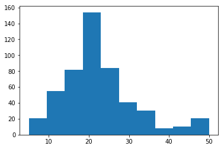
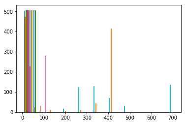
发现差异较大，所以先进行标准化处理，关于标准化的方法，已经在上一篇文章中讲过，忘记的朋友可以去翻翻看
1 | #标准化数据 |
/home/fantasy/anaconda2/lib/python2.7/site-packages/sklearn/preprocessing/data.py:586: DeprecationWarning: Passing 1d arrays as data is deprecated in 0.17 and will raise ValueError in 0.19. Reshape your data either using X.reshape(-1, 1) if your data has a single feature or X.reshape(1, -1) if it contains a single sample.
warnings.warn(DEPRECATION_MSG_1D, DeprecationWarning)
/home/fantasy/anaconda2/lib/python2.7/site-packages/sklearn/preprocessing/data.py:649: DeprecationWarning: Passing 1d arrays as data is deprecated in 0.17 and will raise ValueError in 0.19. Reshape your data either using X.reshape(-1, 1) if your data has a single feature or X.reshape(1, -1) if it contains a single sample.
warnings.warn(DEPRECATION_MSG_1D, DeprecationWarning)
/home/fantasy/anaconda2/lib/python2.7/site-packages/sklearn/preprocessing/data.py:649: DeprecationWarning: Passing 1d arrays as data is deprecated in 0.17 and will raise ValueError in 0.19. Reshape your data either using X.reshape(-1, 1) if your data has a single feature or X.reshape(1, -1) if it contains a single sample.
warnings.warn(DEPRECATION_MSG_1D, DeprecationWarning)
标准化之后，就要开始拟合模型了
基于最小二乘法的LinearRegression：
1 | from sklearn.linear_model import LinearRegression |
1 | #评估模型 |
The value of default measurement of LinearRegression is 0.6763403831
1 | # 从sklearn.metrics依次导入r2_score、mean_squared_error以及mean_absoluate_error用于回归性能的评估。 |
The value of R-squared of LinearRegression is 0.6763403831
1 | #可视化因变量 |
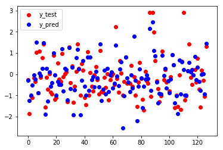
拟合效果还不错
在模型评估时，两种方式是一样的，以后直接用第一种，即模型自带的score就可以了
但是，一个拟合出来的模型并不是直接可以拿来用的。还需要对其统计性质进行检验
主要有以下四个检验：
（数值型）自变量要与因变量有线性关系；
残差基本呈正态分布；
残差方差基本不变（同方差性）；
残差（样本）间相关独立。
第一个可以直接绘制每隔变量与因变量之间的散点图（子图）,还是以波斯顿房价为例进行演示，如下
1 | xlabel=[] |
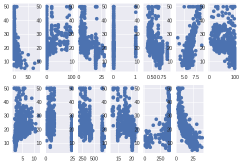
检验残差是否基本上呈正态分布也建议直接Spss
1 | #不确定,建议SPSS |
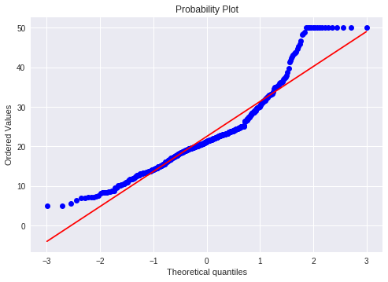
1 | #不确定，建议SPSS |
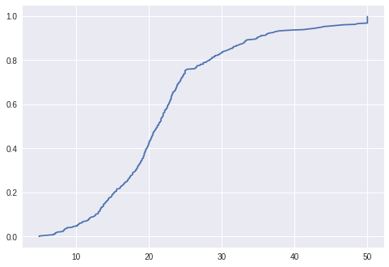
共线性检验可直接上Spss,看VIF,简单粗暴
1 | #这个是绘制VIF的程序，没看懂，以后再研究 |
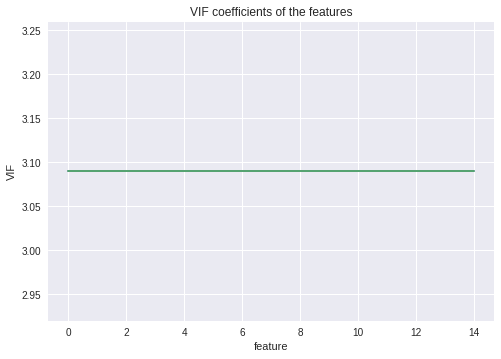
说完了基于最小二乘法的线性回归，咱们接下来看一个随机梯度下降原理拟合的线性回归模型
所谓梯度下降法，就是利用沿着梯度下降最快的方向求偏导数，得到损失函数的全局最小值时的参数θ，涉及到偏导数、学习速度、更新、收敛等问题。
不过这里我们并不讨论这些，具体的可以看这篇文章https://github.com/endymecy/spark-ml-source-analysis/blob/master/%E6%9C%80%E4%BC%98%E5%8C%96%E7%AE%97%E6%B3%95/%E6%A2%AF%E5%BA%A6%E4%B8%8B%E9%99%8D/gradient-descent.md 而是在sklearn中实现它，如下
1 | from sklearn.linear_model import SGDRegressor |
SGDRegressor(alpha=0.0001, average=False, epsilon=0.1, eta0=0.01,
fit_intercept=True, l1_ratio=0.15, learning_rate='invscaling',
loss='squared_loss', n_iter=5, penalty='l2', power_t=0.25,
random_state=None, shuffle=True, verbose=0, warm_start=False)
1 | sgdr_y_predict=model.predict(X_test)#做预测 |
可视化结果y的真实值和预测值之间的差距：
1 | plt.scatter(np.arange(len(y_test)),y_test,color = 'red',label='y_test') |

看一下R方：
1 | #模型model自带的 |
R_square: 0.66058562575
1 | # 从sklearn.metrics依次导入r2_score、mean_squared_error以及mean_absoluate_error用于回归性能的评估。 |
The value of R-squared of LinearRegression is 0.66058562575
还有一种方法，就是用岭回归
岭回归是一种专用于共线性数据分析的有偏估计回归方法，实质上是一种改良的最小二乘估计法，通过放弃最小二乘法的无偏性，以损失部分信息、降低精度为代价获得回归系数更为符合实际、更可靠的回归方法，对病态数据的拟合要强于最小二乘法。
1 | import numpy as np |
1 | from sklearn.linear_model import Ridge,RidgeCV # Ridge岭回归,RidgeCV带有广义交叉验证的岭回归 |
1 | # ========岭回归======== |
系数矩阵:
[-0.10354081 0.11293307 -0.01049108 0.09295071 -0.15094031 0.32557661
-0.02033021 -0.2991313 0.20061662 -0.15572242 -0.19759762 0.05583187
-0.39404276] 5.52785513551e-15
线性回归模型:
RidgeCV(alphas=[0.1, 1.0, 10.0], cv=None, fit_intercept=True, gcv_mode=None,
normalize=False, scoring=None, store_cv_values=False)
结果可视化
1 | plt.scatter(np.arange(len(y_test)),y_test,color = 'red',label='y_test') |
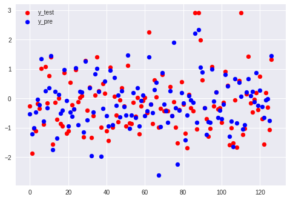
1 | #模型model自带的 |
R_square: 0.67691092236
1 | # 从sklearn.metrics依次导入r2_score、mean_squared_error以及mean_absoluate_error用于回归性能的评估。 |
The value of R-squared of LinearRegression is 0.67691092236
综合上面三种方法的比较，发现岭回归的效果最好
线性模型掌握这三个完全够用了，下面来看一下非线性模型的回归拟合，主要是关于多项式拟合的，其余的对数，指数拟合这里不再讨论
- 多项式拟合
1 | #导入线性模型和多项式特征构造模块 |
1 | print X_train.shape#之前的ｓｉｚｅ |
(379, 13)
(127, 13)
1 | X_train=poly_reg_x.fit_transform(X_train)#每个训练集都被transform |
1 | print X_train.shape#之后的ｓｉｚｅ |
(379, 105)
(127, 105)
在构造完多项式特征之后，就可以用之前的线性回归lr来操作了
注意：在先对数据标准化之后再构造多项式特征与先构造多项式特征再标准化的结果差距很大，就本例而言，前者似乎更有效
1 | from sklearn.linear_model import LinearRegression |
1 | modeler=lr.fit(X_train,y_train)#模型拟合 |
1 | poly_y_predict=modeler.predict(X_test)#做预测 |
1 | #模型model自带的 |
R_square: 0.842818486817
1 | # 从sklearn.metrics依次导入r2_score、mean_squared_error以及mean_absoluate_error用于回归性能的评估。 |
The value of mean_squared_error of LinearRegression is 0.290920352888
均方误差如此小，模型堪称完美
模型效果可视化：
1 | plt.scatter(np.arange(len(y_test)),y_test,color = 'red',label='y_test') |
以上是在sklearn中的多项式拟合方法，我们可以查看下模型的系数，比较多,这算是一个缺点了（模型难写，容易过拟合）
1 | print modeler.coef_#由低阶到高阶 |
[ 9.83736707e-13 -2.66737655e-03 3.16462828e-01 1.25375928e+00
3.17151400e+12 -1.61912385e-01 3.80770585e-01 -2.70605062e-01
-2.30644623e-01 6.36550903e-01 -1.23194122e+00 1.82800293e-01
1.47033691e-01 -3.51562500e-01 9.76562500e-03 1.60988998e+00
2.96385193e+00 5.17631531e-01 -2.71759033e-02 5.75256348e-02
-1.39862061e-01 -3.11294556e-01 1.75088501e+00 -4.04202271e+00
9.93446350e-01 -9.21630859e-03 1.07109070e-01 -4.19921875e-02
-4.53796387e-02 -1.73645020e-02 -2.53723145e-01 2.30712891e-02
-3.18298340e-02 1.45568848e-02 -5.79681396e-02 1.94564819e-01
-5.81054688e-02 2.40783691e-02 -1.19384766e-01 1.56875610e-01
-2.15034485e-02 2.81250000e-01 1.61010742e-01 3.10821533e-02
3.52600098e-01 6.44836426e-02 -4.64248657e-02 1.86462402e-02
7.94677734e-02 -3.62548828e-02 -9.95393091e+11 -1.26373291e-01
-9.04617310e-02 6.21032715e-03 -2.34451294e-02 -4.63104248e-02
8.61663818e-02 -5.27343750e-02 3.11126709e-02 -4.30259705e-02
-1.50436401e-01 7.12280273e-02 -1.96792603e-01 1.67648315e-01
-1.43829346e-01 2.98084259e-01 -2.63671875e-01 3.46069336e-02
9.91134644e-02 4.61425781e-02 -1.51935577e-01 -1.54113770e-03
-6.87255859e-02 -2.09899902e-01 -5.36499023e-02 -7.35473633e-03
-7.93457031e-02 1.32598877e-02 -2.28881836e-03 4.61242676e-01
-2.49618530e-01 -2.85339355e-02 -1.33331299e-01 -1.42181396e-01
1.50909424e-01 -7.42797852e-02 -1.14502907e-01 -5.12084961e-02
4.06494141e-02 9.94567871e-02 -8.89060974e-01 8.14544678e-01
-1.85592651e-01 -5.57861328e-02 -2.31964111e-01 -5.03234863e-02
1.87805176e-01 2.02636719e-02 -1.73187256e-02 4.75559235e-02
2.38952637e-02 3.66210938e-03 -3.41796875e-03 -2.86254883e-02
6.39343262e-02]
以上也是基于最小二乘原理的，因为我们只是用sklearn的多项式构造模块将原来的线性数据通过列方向的扩充，变成了多项式的形式，但还是用的LinearRegression来拟合模型的，那么，我们可以试一下别的原理，比如下面的岭回归拟合多项式：
1 | import numpy as np |
1 | print X_train.shape#之前的ｓｉｚｅ |
(379, 13)
(127, 13)
1 | #导入构造多项式特征模块 |
在下一步之前对原始数据进行了标准化！！！
1 | #在这一步之前对原始数据进行了标准化！！！ |
1 | print X_train.shape#之后的ｓｉｚｅ |
(379, 105)
(127, 105)
1 | poly_ridge=ridge.fit(X_train,y_train)#模型拟合 |
1 | poly_ridge_y_predict=ridge.predict(X_test)#做预测 |
1 | #模型ridge自带的 |
R_square: 0.846155705955
1 | #从sklearn.metrics依次导入r2_score、mean_squared_error以及mean_absoluate_error用于回归性能的评估。 |
The value of mean_squared_error of RidgeRegression is 0.138526615137
1 | #查看模型的系数 |
[ 0. -0.01515184 -0.10580862 0.27932288 0.01645974 -0.14657861
0.36744518 -0.22397917 -0.21912044 0.05965385 -0.04161497 -0.08866449
0.11792374 -0.3637897 0.01224963 0.04046505 0.16591023 0.47025105
-0.0426397 0.06610476 -0.07187838 -0.14978614 -0.23375497 -0.01411628
0.05016413 -0.00793163 0.09939217 -0.0134973 -0.02031623 0.00222154
-0.13674295 0.02549065 -0.02315901 0.00183563 -0.00664953 0.17951566
-0.02818604 -0.03342595 -0.10510401 0.10889808 -0.00633295 0.33583991
0.14526388 0.04291548 0.32826641 0.07628581 0.00221103 -0.0020726
0.03954039 -0.02489515 0.05244391 -0.11941144 -0.08827233 0.01151196
-0.028727 -0.0410782 0.06641088 -0.0236821 -0.00505518 -0.04825191
-0.12339398 0.0680945 -0.1614648 0.13523431 -0.08524669 0.11271328
-0.182551 0.03326487 0.10387014 0.04437453 -0.14262386 0.00168108
-0.06360327 -0.20487222 -0.06044155 -0.01195337 -0.08105273 0.01500186
0.01720694 0.32904656 -0.16341483 -0.03929378 -0.13649985 -0.14039058
0.14996113 -0.11682082 -0.09929801 -0.06146238 0.0137472 0.07554982
-0.50475006 0.39750343 -0.098317 -0.06266169 -0.16932652 -0.04422031
0.18347525 0.04147819 -0.10451011 0.0364601 0.0112839 0.02664297
-0.00190007 -0.02998467 0.07018101] -0.190718574726
1 | #可视化效果 |
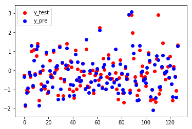
总结一下关于sklearn中的PolynomialFeatures的用法，就是最好在构造多项式特征之前对原始的数据（x和y）进行标准化处理，然后就可以使用基于最小二乘法的LinearRegression或者基于别的原理的RidgeRegression了.
其实，在numpy中也有多项式拟合的模块，只是只能拟合一元的多项式，即一个自变量和一个因变量，下面就一起来看一下
1 | import numpy as np |
[ 0.13493869 21.35130147]
0.1349 x + 21.35
1 | z = np.polyval(z1, X_train[:,1])#用刚刚拟合处理的模型z1来代入X_train[:,1]求得预模型的测值并保存在z中 |
1 | z |
array([ 24.05007536, 21.35130147, 21.35130147, 28.77292967,
21.35130147, 21.35130147, 21.35130147, 21.35130147,
21.35130147, 34.17047745, 24.05007536, 23.03803515,
21.35130147, 21.35130147, 21.35130147, 24.05007536,
25.93921708, 32.14639703, 21.35130147, 25.80427839,
21.35130147, 21.35130147, 21.35130147, 21.35130147,
21.35130147, 32.14639703, 21.35130147, 21.35130147,
21.35130147, 21.35130147, 21.35130147, 21.35130147,
21.35130147, 21.35130147, 21.35130147, 21.35130147,
21.35130147, 21.35130147, 24.31995275, 21.35130147,
21.35130147, 26.07415578, 21.35130147, 21.35130147,
32.14639703, 21.35130147, 21.35130147, 21.35130147,
21.35130147, 21.35130147, 24.31995275, 21.35130147,
24.72476883, 24.05007536, 21.35130147, 21.35130147,
21.35130147, 24.05007536, 25.12958491, 21.35130147,
21.35130147, 24.72476883, 21.35130147, 32.82109051,
21.35130147, 21.35130147, 21.35130147, 21.35130147,
21.35130147, 32.14639703, 21.35130147, 21.35130147,
21.35130147, 21.35130147, 21.35130147, 21.35130147,
21.35130147, 21.35130147, 26.07415578, 28.43558293,
21.35130147, 31.47170356, 34.17047745, 24.18501405,
24.05007536, 21.35130147, 21.35130147, 24.05007536,
21.35130147, 21.35130147, 21.35130147, 21.35130147,
32.14639703, 25.3994623 , 21.35130147, 21.35130147,
21.35130147, 24.05007536, 21.35130147, 21.35130147,
21.35130147, 21.35130147, 21.35130147, 21.35130147,
24.05007536, 24.72476883, 24.05007536, 21.35130147,
24.72476883, 23.03803515, 21.35130147, 21.35130147,
21.35130147, 21.35130147, 21.35130147, 21.35130147,
32.14639703, 21.35130147, 25.93921708, 21.35130147,
21.35130147, 21.35130147, 21.35130147, 23.03803515,
21.35130147, 21.35130147, 21.35130147, 21.35130147,
21.35130147, 26.74884925, 21.35130147, 28.43558293,
21.35130147, 21.35130147, 29.44762314, 21.35130147,
21.35130147, 21.35130147, 21.35130147, 25.80427839,
24.05007536, 25.3994623 , 21.35130147, 21.35130147,
21.35130147, 23.03803515, 21.35130147, 21.35130147,
21.35130147, 21.35130147, 21.35130147, 21.35130147,
21.35130147, 21.35130147, 21.35130147, 21.35130147,
21.35130147, 25.12958491, 21.35130147, 21.35130147,
21.35130147, 21.35130147, 21.35130147, 21.35130147,
32.14639703, 21.35130147, 21.35130147, 21.35130147,
21.35130147, 21.35130147, 25.12958491, 24.72476883,
21.35130147, 21.35130147, 21.35130147, 21.35130147,
21.35130147, 21.35130147, 21.35130147, 21.35130147,
21.35130147, 21.35130147, 21.35130147, 21.35130147,
21.35130147, 21.35130147, 21.35130147, 21.35130147,
21.35130147, 21.35130147, 21.35130147, 21.35130147,
21.35130147, 28.77292967, 21.35130147, 21.35130147,
21.35130147, 21.35130147, 21.35130147, 21.35130147,
21.35130147, 26.74884925, 24.05007536, 26.74884925,
21.35130147, 21.35130147, 21.35130147, 24.05007536,
23.03803515, 21.35130147, 21.35130147, 21.35130147,
21.35130147, 27.42354272, 21.35130147, 21.35130147,
24.31995275, 21.35130147, 21.35130147, 21.35130147,
21.35130147, 21.35130147, 21.35130147, 24.05007536,
27.42354272, 21.35130147, 24.31995275, 21.35130147,
27.42354272, 21.35130147, 21.35130147, 21.35130147,
21.35130147, 21.35130147, 21.35130147, 21.35130147,
21.35130147, 28.43558293, 21.35130147, 32.14639703,
21.35130147, 21.35130147, 21.35130147, 21.35130147,
21.35130147, 21.35130147, 21.35130147, 21.35130147,
21.35130147, 21.35130147, 24.05007536, 21.35130147,
31.47170356, 25.80427839, 24.72476883, 26.74884925,
21.35130147, 21.35130147, 24.05007536, 21.35130147,
21.35130147, 21.35130147, 21.35130147, 21.35130147,
21.35130147, 24.31995275, 21.35130147, 21.35130147,
24.18501405, 33.49578398, 21.35130147, 21.35130147,
21.35130147, 21.35130147, 21.35130147, 30.79701009,
21.35130147, 29.44762314, 21.35130147, 32.48374377,
21.35130147, 21.35130147, 21.35130147, 32.14639703,
32.14639703, 21.35130147, 24.31995275, 21.35130147,
21.35130147, 21.35130147, 21.35130147, 25.3994623 ,
21.35130147, 21.35130147, 21.35130147, 21.35130147,
33.49578398, 21.35130147, 21.35130147, 21.35130147,
21.35130147, 21.35130147, 21.35130147, 21.35130147,
21.35130147, 23.03803515, 31.47170356, 21.35130147,
21.35130147, 21.35130147, 21.35130147, 21.35130147,
21.35130147, 21.35130147, 21.35130147, 21.35130147,
27.42354272, 24.05007536, 24.72476883, 34.17047745,
33.49578398, 24.18501405, 21.35130147, 21.35130147,
21.35130147, 24.05007536, 21.35130147, 21.35130147,
21.35130147, 21.35130147, 21.35130147, 21.35130147,
21.35130147, 21.35130147, 21.35130147, 24.31995275,
21.35130147, 21.35130147, 23.03803515, 21.35130147,
23.03803515, 24.72476883, 21.35130147, 21.35130147,
21.35130147, 21.35130147, 21.35130147, 28.77292967,
21.35130147, 21.35130147, 24.31995275, 21.35130147,
21.35130147, 24.72476883, 21.35130147, 21.35130147,
21.35130147, 21.35130147, 21.35130147, 21.35130147,
21.35130147, 21.35130147, 21.35130147, 21.35130147,
32.14639703, 25.93921708, 21.35130147, 21.35130147,
21.35130147, 24.72476883, 21.35130147, 32.14639703,
34.84517093, 32.48374377, 21.35130147, 32.14639703,
21.35130147, 21.35130147, 21.35130147])
或者我们直接把自变量的值代入拟合好的方程里面,得到的结果和上面的一样.
1 | y_pre=p1(X_train[:,1]) |
1 | y_pre |
array([ 24.05007536, 21.35130147, 21.35130147, 28.77292967,
21.35130147, 21.35130147, 21.35130147, 21.35130147,
21.35130147, 34.17047745, 24.05007536, 23.03803515,
21.35130147, 21.35130147, 21.35130147, 24.05007536,
25.93921708, 32.14639703, 21.35130147, 25.80427839,
21.35130147, 21.35130147, 21.35130147, 21.35130147,
21.35130147, 32.14639703, 21.35130147, 21.35130147,
21.35130147, 21.35130147, 21.35130147, 21.35130147,
21.35130147, 21.35130147, 21.35130147, 21.35130147,
21.35130147, 21.35130147, 24.31995275, 21.35130147,
21.35130147, 26.07415578, 21.35130147, 21.35130147,
32.14639703, 21.35130147, 21.35130147, 21.35130147,
21.35130147, 21.35130147, 24.31995275, 21.35130147,
24.72476883, 24.05007536, 21.35130147, 21.35130147,
21.35130147, 24.05007536, 25.12958491, 21.35130147,
21.35130147, 24.72476883, 21.35130147, 32.82109051,
21.35130147, 21.35130147, 21.35130147, 21.35130147,
21.35130147, 32.14639703, 21.35130147, 21.35130147,
21.35130147, 21.35130147, 21.35130147, 21.35130147,
21.35130147, 21.35130147, 26.07415578, 28.43558293,
21.35130147, 31.47170356, 34.17047745, 24.18501405,
24.05007536, 21.35130147, 21.35130147, 24.05007536,
21.35130147, 21.35130147, 21.35130147, 21.35130147,
32.14639703, 25.3994623 , 21.35130147, 21.35130147,
21.35130147, 24.05007536, 21.35130147, 21.35130147,
21.35130147, 21.35130147, 21.35130147, 21.35130147,
24.05007536, 24.72476883, 24.05007536, 21.35130147,
24.72476883, 23.03803515, 21.35130147, 21.35130147,
21.35130147, 21.35130147, 21.35130147, 21.35130147,
32.14639703, 21.35130147, 25.93921708, 21.35130147,
21.35130147, 21.35130147, 21.35130147, 23.03803515,
21.35130147, 21.35130147, 21.35130147, 21.35130147,
21.35130147, 26.74884925, 21.35130147, 28.43558293,
21.35130147, 21.35130147, 29.44762314, 21.35130147,
21.35130147, 21.35130147, 21.35130147, 25.80427839,
24.05007536, 25.3994623 , 21.35130147, 21.35130147,
21.35130147, 23.03803515, 21.35130147, 21.35130147,
21.35130147, 21.35130147, 21.35130147, 21.35130147,
21.35130147, 21.35130147, 21.35130147, 21.35130147,
21.35130147, 25.12958491, 21.35130147, 21.35130147,
21.35130147, 21.35130147, 21.35130147, 21.35130147,
32.14639703, 21.35130147, 21.35130147, 21.35130147,
21.35130147, 21.35130147, 25.12958491, 24.72476883,
21.35130147, 21.35130147, 21.35130147, 21.35130147,
21.35130147, 21.35130147, 21.35130147, 21.35130147,
21.35130147, 21.35130147, 21.35130147, 21.35130147,
21.35130147, 21.35130147, 21.35130147, 21.35130147,
21.35130147, 21.35130147, 21.35130147, 21.35130147,
21.35130147, 28.77292967, 21.35130147, 21.35130147,
21.35130147, 21.35130147, 21.35130147, 21.35130147,
21.35130147, 26.74884925, 24.05007536, 26.74884925,
21.35130147, 21.35130147, 21.35130147, 24.05007536,
23.03803515, 21.35130147, 21.35130147, 21.35130147,
21.35130147, 27.42354272, 21.35130147, 21.35130147,
24.31995275, 21.35130147, 21.35130147, 21.35130147,
21.35130147, 21.35130147, 21.35130147, 24.05007536,
27.42354272, 21.35130147, 24.31995275, 21.35130147,
27.42354272, 21.35130147, 21.35130147, 21.35130147,
21.35130147, 21.35130147, 21.35130147, 21.35130147,
21.35130147, 28.43558293, 21.35130147, 32.14639703,
21.35130147, 21.35130147, 21.35130147, 21.35130147,
21.35130147, 21.35130147, 21.35130147, 21.35130147,
21.35130147, 21.35130147, 24.05007536, 21.35130147,
31.47170356, 25.80427839, 24.72476883, 26.74884925,
21.35130147, 21.35130147, 24.05007536, 21.35130147,
21.35130147, 21.35130147, 21.35130147, 21.35130147,
21.35130147, 24.31995275, 21.35130147, 21.35130147,
24.18501405, 33.49578398, 21.35130147, 21.35130147,
21.35130147, 21.35130147, 21.35130147, 30.79701009,
21.35130147, 29.44762314, 21.35130147, 32.48374377,
21.35130147, 21.35130147, 21.35130147, 32.14639703,
32.14639703, 21.35130147, 24.31995275, 21.35130147,
21.35130147, 21.35130147, 21.35130147, 25.3994623 ,
21.35130147, 21.35130147, 21.35130147, 21.35130147,
33.49578398, 21.35130147, 21.35130147, 21.35130147,
21.35130147, 21.35130147, 21.35130147, 21.35130147,
21.35130147, 23.03803515, 31.47170356, 21.35130147,
21.35130147, 21.35130147, 21.35130147, 21.35130147,
21.35130147, 21.35130147, 21.35130147, 21.35130147,
27.42354272, 24.05007536, 24.72476883, 34.17047745,
33.49578398, 24.18501405, 21.35130147, 21.35130147,
21.35130147, 24.05007536, 21.35130147, 21.35130147,
21.35130147, 21.35130147, 21.35130147, 21.35130147,
21.35130147, 21.35130147, 21.35130147, 24.31995275,
21.35130147, 21.35130147, 23.03803515, 21.35130147,
23.03803515, 24.72476883, 21.35130147, 21.35130147,
21.35130147, 21.35130147, 21.35130147, 28.77292967,
21.35130147, 21.35130147, 24.31995275, 21.35130147,
21.35130147, 24.72476883, 21.35130147, 21.35130147,
21.35130147, 21.35130147, 21.35130147, 21.35130147,
21.35130147, 21.35130147, 21.35130147, 21.35130147,
32.14639703, 25.93921708, 21.35130147, 21.35130147,
21.35130147, 24.72476883, 21.35130147, 32.14639703,
34.84517093, 32.48374377, 21.35130147, 32.14639703,
21.35130147, 21.35130147, 21.35130147])
这种就可以直观的可视化真实值与预测曲线之间的关系了，如下：
1 | plt.scatter(X_train[:,1], y_train,color='red',label='true') |
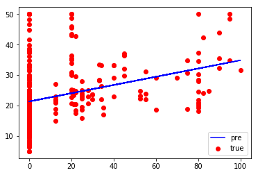
这里我在网上找了一个numpy拟合多项式的例子，贴在下面了，供大家参考
1 | #多项式拟合(从给定的x,y中解析出最接近数据的方程式) |
[ -9.24538084e-04 3.76792011e-02 -5.54639386e-01 3.60545597e+00
1.03629808e+00]
4 3 2
-0.0009245 x + 0.03768 x - 0.5546 x + 3.605 x + 1.036
8.922135181
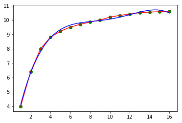
关于回归拟合的问题就说这么多，在用到的时候直接拿以上代码稍微修改一下便可使用了，更多干货请关注微信公众号“我将在南极找寻你”！
下课！
1 |